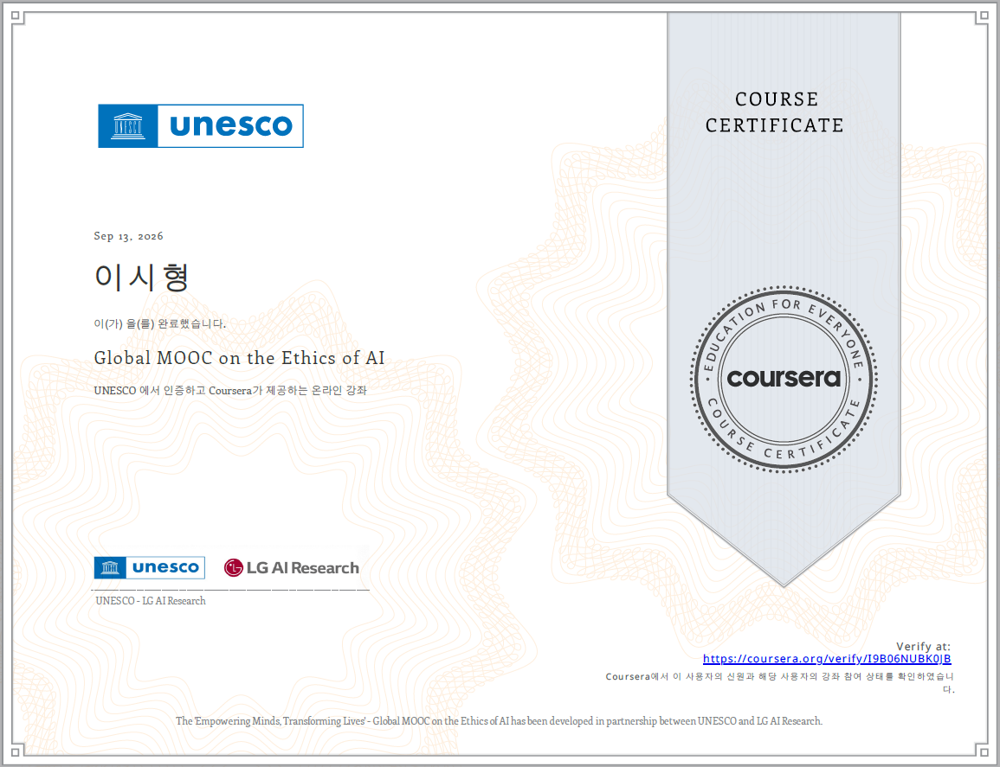

COURSE CERTIFICATE
Global MOOC on the Ethics of AI
UNESCO · LG AI Research · Coursera
UNESCO 인증 및 Coursera 제공 AI 윤리 온라인 교육과정 수료.
- Recipient
- Sihyeong Lee (이시형)
- Completed
- September 13, 2026
- Topic
- Ethics of Artificial Intelligence